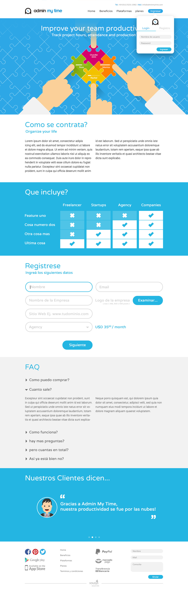

Before settling into any one product, I spent a few years moving between small concepts and client prototypes. This case study samples five of them: three mobile app ideas, a route-accounting tool built for delivery drivers on an iPad, and a time-tracking web app.
Three early mobile concepts, each solving a different problem: T3 blends two photos into one, Snapminder turns a snapshot into a reminder, and Studigy organizes video lessons by subject. Switch between them below.
jLan is a route-accounting app for delivery drivers working directly with retail accounts: routes, order guides, billing with signature capture, customer surveys, and stock counts, all built for a large-format tablet used in the field.
Admin My Time is a time-tracking and attendance web app aimed at small teams and agencies. This is the marketing landing page pitching the product ahead of sign-up: plans, an FAQ, and testimonials.

Different products, different constraints — a phone screen, a warehouse tablet, a browser tab — but the same questions every time: what does this screen need to do right now, and what can wait until the next one?